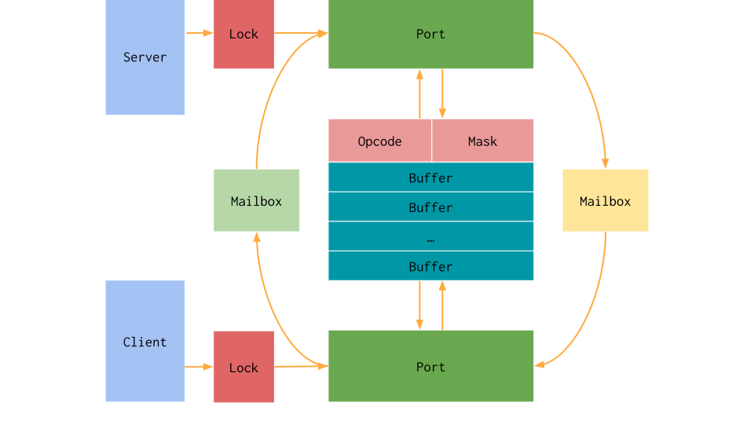

Remote Procedure Calls¶
Remote Procedure Call Implementation¶
Traditionally, the C library abstracts over several functions that interface with the platform’s operating system through system calls. The GPU however does not provide an operating system that can handle target dependent operations. Instead, we implemented remote procedure calls to interface with the host’s operating system while executing on a GPU.
We implemented remote procedure calls using unified virtual memory to create a shared communicate channel between the two processes. This memory is often pinned memory that can be accessed asynchronously and atomically by multiple processes simultaneously. This support means that we can simply provide mutual exclusion on a shared buffer to swap work back and forth between the host system and the GPU. We can then use this to create a simple client-server protocol using this shared memory.
This work treats the GPU as a client and the host as a server. The client initiates a communication while the server listens for them. In order to communicate between the host and the device, we simply maintain a buffer of memory and two mailboxes. One mailbox is write-only while the other is read-only. This exposes three primitive operations: using the buffer, giving away ownership, and waiting for ownership. This is implemented as a half-duplex transmission channel between the two sides. We decided to assign ownership of the buffer to the client when the inbox and outbox bits are equal and to the server when they are not.
In order to make this transmission channel thread-safe, we abstract ownership of the given mailbox pair and buffer around a port, effectively acting as a lock and an index into the allocated buffer slice. The server and device have independent locks around the given port. In this scheme, the buffer can be used to communicate intent and data generically with the server. We then simply provide multiple copies of this protocol and expose them as multiple ports.
If this were simply a standard CPU system, this would be sufficient. However, GPUs have my unique architectural challenges. First, GPU threads execute in lock-step with each other in groups typically called warps or wavefronts. We need to target the smallest unit of independent parallelism, so the RPC interface needs to handle an entire group of threads at once. This is done by increasing the size of the buffer and adding a thread mask argument so the server knows which threads are active when it handles the communication. Second, GPUs generally have no forward progress guarantees. In order to guarantee we do not encounter deadlocks while executing it is required that the number of ports matches the maximum amount of hardware parallelism on the device. It is also very important that the thread mask remains consistent while interfacing with the port.
{kind=link}

The above diagram outlines the architecture of the RPC interface. For clarity the following list will explain the operations done by the client and server respectively when initiating a communication.
First, a communication from the perspective of the client:
The client searches for an available port and claims the lock.
The client checks that the port is still available to the current device and continues if so.
The client writes its data to the fixed-size packet and toggles its outbox.
The client waits until its inbox matches its outbox.
The client reads the data from the fixed-size packet.
The client closes the port and continues executing.
Now, the same communication from the perspective of the server:
The server searches for an available port with pending work and claims the lock.
The server checks that the port is still available to the current device.
The server reads the opcode to perform the expected operation, in this case a receive and then send.
The server reads the data from the fixed-size packet.
The server writes its data to the fixed-size packet and toggles its outbox.
The server closes the port and continues searching for ports that need to be serviced
This architecture currently requires that the host periodically checks the RPC server’s buffer for ports with pending work. Note that a port can be closed without waiting for its submitted work to be completed. This allows us to model asynchronous operations that do not need to wait until the server has completed them. If an operation requires more data than the fixed size buffer, we simply send multiple packets back and forth in a streaming fashion.
Client Example¶
The Client API is not currently exported by the LLVM C library. This is primarily due to being written in C++ and relying on internal data structures. It uses a simple send and receive interface with a fixed-size packet. The following example uses the RPC interface to call a function pointer on the server.
This code first opens a port with the given opcode to facilitate the
communication. It then copies over the argument struct to the server using the
send_n interface to stream arbitrary bytes. The next send operation provides
the server with the function pointer that will be executed. The final receive
operation is a no-op and simply forces the client to wait until the server is
done. It can be omitted if asynchronous execution is desired.
void rpc_host_call(void *fn, void *data, size_t size) {
rpc::Client::Port port = rpc::client.open<RPC_HOST_CALL>();
port.send_n(data, size);
port.send([=](rpc::Buffer *buffer, uint32_t) {
buffer->data[0] = reinterpret_cast<uintptr_t>(fn);
});
port.recv([](rpc::Buffer *, uint32_t) {});
}
Server Example¶
This example shows the server-side handling of the previous client example. When the server is checked, if there are any ports with pending work it will check the opcode and perform the appropriate action. In this case, the action is to call a function pointer provided by the client.
In this example, the server simply runs forever in a separate thread for
brevity’s sake. Because the client is a GPU potentially handling several threads
at once, the server needs to loop over all the active threads on the GPU. We
abstract this into the num_lanes variable, which is simply the device’s warp
or wavefront size. The identifier is simply the threads index into the current
warp or wavefront. We allocate memory to copy the struct data into, and then
call the given function pointer with that copied data. The final send simply
signals completion and uses the implicit thread mask to delete the temporary
data.
for(;;) {
auto port = server.try_open(index);
if (!port)
return continue;
switch(port->get_opcode()) {
case RPC_HOST_CALL: {
uint64_t sizes[NUM_LANES];
void *args[NUM_LANES];
port->recv_n(args, sizes, [&](uint64_t size) { return new char[size]; });
port->recv([&](rpc::Buffer *buffer, uint32_t id) {
reinterpret_cast<void (*)(void *)>(buffer->data[0])(args[id]);
});
port->send([&](rpc::Buffer *, uint32_t id) {
delete[] reinterpret_cast<uint8_t *>(args[id]);
});
break;
}
default:
port->recv([](rpc::Buffer *) {});
break;
}
}
Function Dispatch¶
There are cases where the client wants to simply execute a function as-is on the server. A helper function is provided to make this case almost automatic. By default, all memory is assumed to live privately on the client. Pointer arguments will be copied between the client and server for correctness. Pointers to void will all be treated as opaque pointers and copied by-value. Constant character pointers will be treated as C-strings and copied using its length. Functions returning void will wait for the server to complete execution rather than submitting asynchronously.
double fn(int x, long y, char c, double d);
// Client-side dispatch.
double fn(int x, long y, char c, double d) {
return rpc::dispatch<OPCODE>(client, fn, x, y, c, d);
}
// Server-side handling.
for(;;) {
auto port = server.try_open(index);
if (!port)
return continue;
switch(port->get_opcode()) {
case OPCODE:
rpc::invoke<NUM_LANES>(fn, *port);
default:
port->recv([](rpc::Buffer *) {});
break;
}
}
CUDA Server Example¶
The following code shows an example of using the exported RPC interface along
with the C library to manually configure a working server using the CUDA
language. Other runtimes can use the presence of the __llvm_rpc_client
in the GPU executable as an indicator for whether or not the server can be
checked. These details should ideally be handled by the GPU language runtime,
but the following example shows how it can be used by a standard user.
#include <cstdio>
#include <cstdlib>
#include <cuda_runtime.h>
#include <shared/rpc.h>
#include <shared/rpc_opcodes.h>
#include <shared/rpc_server.h>
[[noreturn]] void handle_error(cudaError_t err) {
fprintf(stderr, "CUDA error: %s\n", cudaGetErrorString(err));
exit(EXIT_FAILURE);
}
// Routes the library symbol into the CUDA runtime interface.
[[gnu::weak]] __device__ rpc::Client client asm("__llvm_rpc_client");
// The device-side overload of the standard C function to call.
extern "C" __device__ int puts(const char *);
// Calls the C library function from the GPU C library.
__global__ void hello() { puts("Hello world!"); }
int main() {
void *rpc_client = nullptr;
if (cudaError_t err = cudaGetSymbolAddress(&rpc_client, client))
handle_error(err);
// Initialize the RPC client and server interface.
uint32_t warp_size = 32;
void *rpc_buffer = nullptr;
if (cudaError_t err = cudaMallocHost(
&rpc_buffer,
rpc::Server::allocation_size(warp_size, rpc::MAX_PORT_COUNT)))
handle_error(err);
rpc::Server server(rpc::MAX_PORT_COUNT, rpc_buffer);
rpc::Client client(rpc::MAX_PORT_COUNT, rpc_buffer);
// Initialize the client on the device so it can communicate with the server.
if (cudaError_t err = cudaMemcpy(rpc_client, &client, sizeof(rpc::Client),
cudaMemcpyHostToDevice))
handle_error(err);
cudaStream_t stream;
if (cudaError_t err = cudaStreamCreate(&stream))
handle_error(err);
// Execute the kernel.
hello<<<1, 1, 0, stream>>>();
// While the kernel is executing, check the RPC server for work to do.
// Requires non-blocking CUDA kernels but avoids a separate thread.
do {
auto port = server.try_open(warp_size, /*index=*/0);
if (!port)
continue;
// Only available in-tree from the 'libc' sources.
handle_libc_opcodes(*port, warp_size);
} while (cudaStreamQuery(stream) == cudaErrorNotReady);
}
The above code must be compiled in CUDA’s relocatable device code mode and with
the advanced offloading driver to link in the library. Currently this can be
done with the following invocation. Using LTO avoids the overhead normally
associated with relocatable device code linking. The C library for GPU’s
handling is included through the shared/ directory. This is not currently
installed as it does not use a stable interface.
$> clang++ -x cuda rpc.cpp --offload-arch=native -fgpu-rdc -lcudart \
-I<install-path>include -L<install-path>/lib -Xoffload-linker -lc \
-O3 -foffload-lto -o hello
$> ./hello
Hello world!
Extensions¶
The opcode is a 32-bit integer that must be unique to the requested operation.
All opcodes used by libc internally have the character c in the most
significant byte. Any other opcode is available for use outside of the libc
implementation.